ENDÉMICAS DE NUESTRA TIERRA
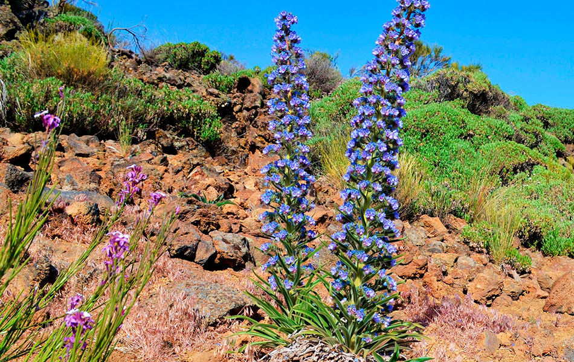
Tajinaste Azul
echium callithyrsum
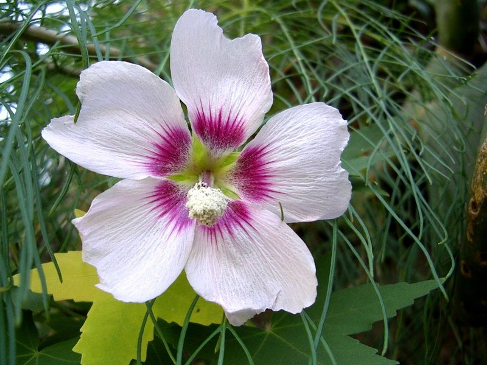
Malva de Risco
lavatera acerifolia
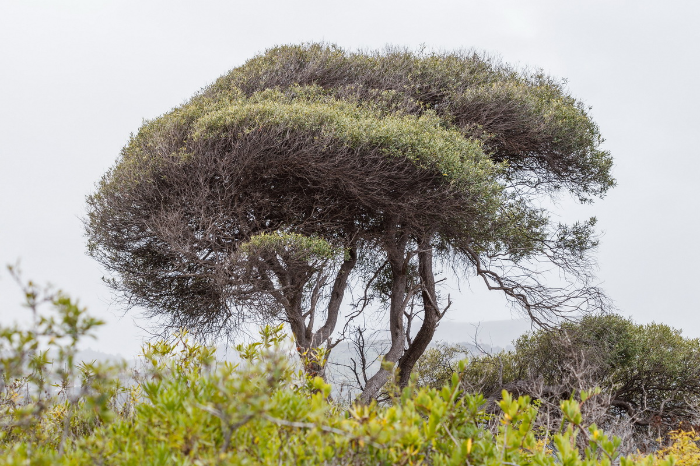
Acebuche
olea oleaster
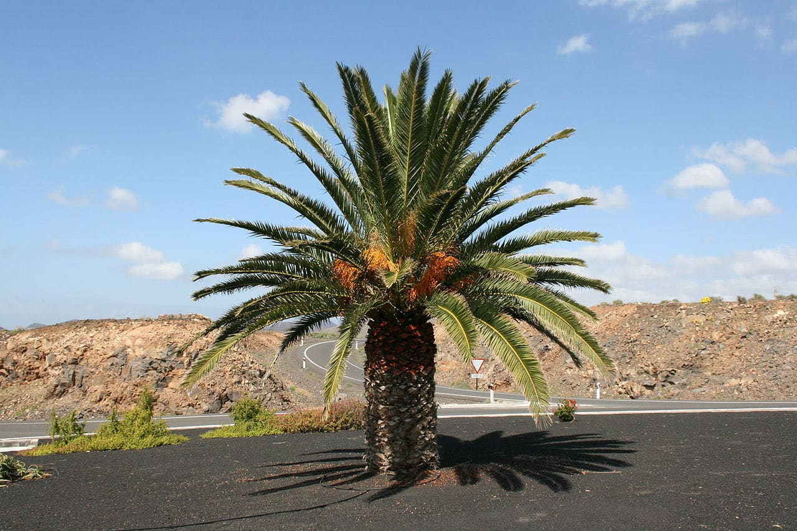
Palmera Canaria
phoenix canariensis
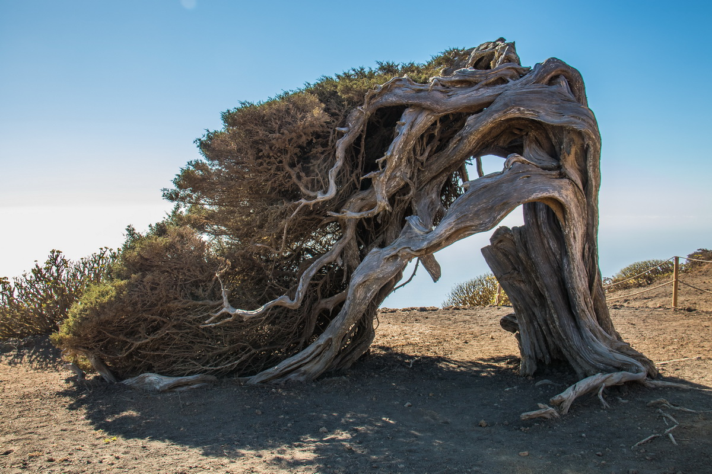
Sabina
juniperus canariensis
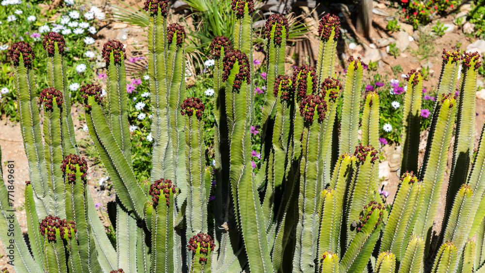
Cardón
euphorbia canariensis
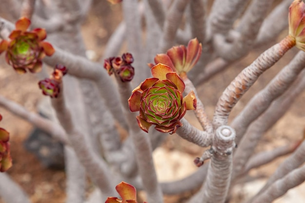
Verol
kleinia neriifolia
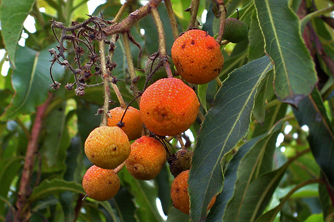
Madroño Canario
arbutus canariensis
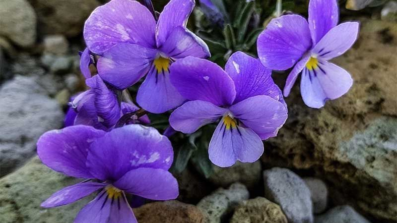
Violeta del Teide
viola cheiranthifolia
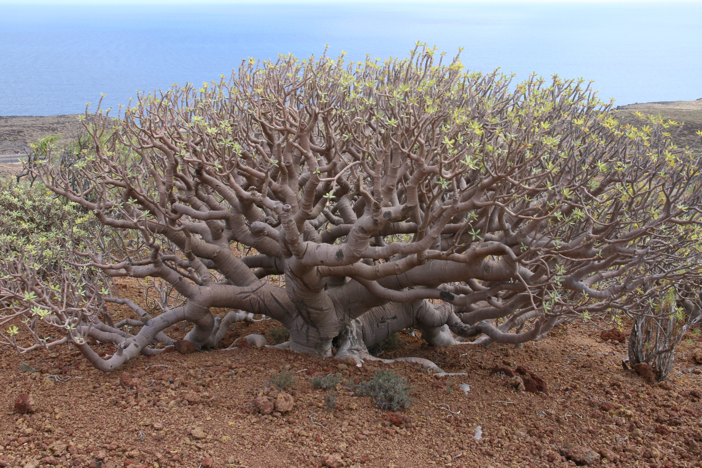
Tabaiba
euphorbia balsamifera
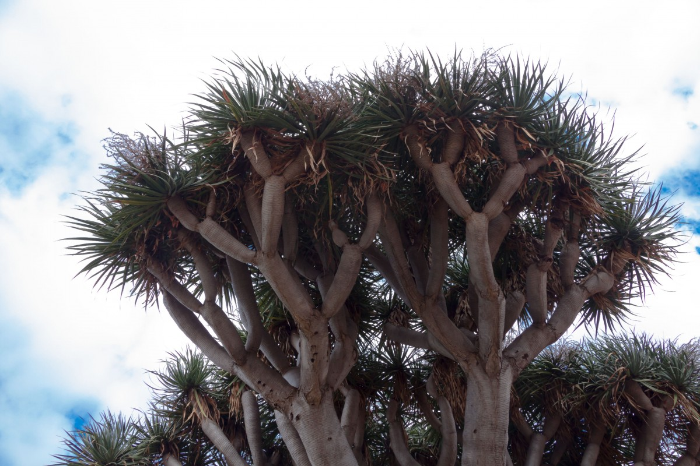
Nuestras especies han viajado fuera de las islas
El jardín Botánico de Iași llevó a cabo este 2026 una exposición de flora exótica en conmemoración de su 50º aniversario. Entre la flora escogida se encontró por ejemplo el "Drago Canario".
Web Oficial:En Peligro de Extinción
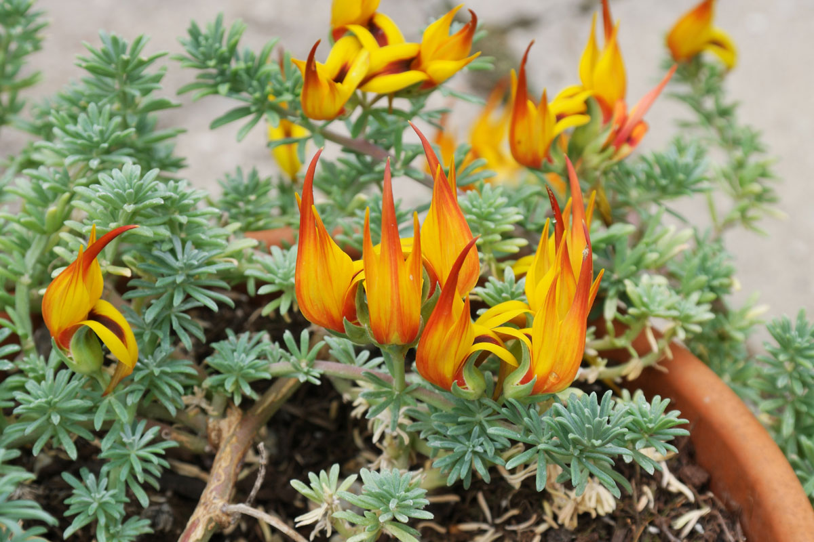
Pico Paloma Amarillo
lotus maculatus
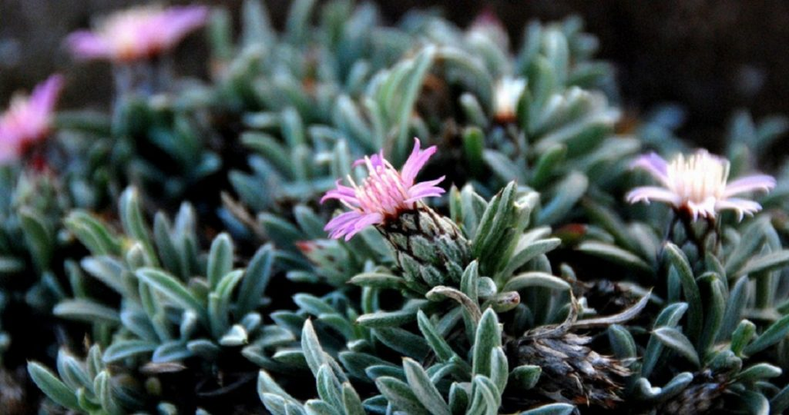
Piñamar
atractylis preauxiana
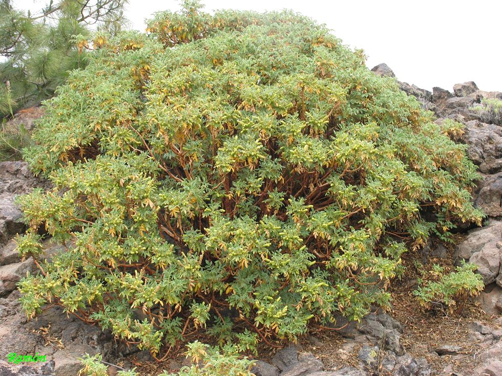
Rosal del Guanche
bencomia exstipulata
La pequeña superficie de Canarias, 7.492 km², su aislamiento geográfico, sus características orográficas, edafológicas y climáticas, además de las particulares características de su flora, como el hecho de que muchas especies sólo se desarrollen en espacios muy reducidos, ha hecho que muchas plantas canarias se encuentren en mayor o menor grado de peligro. Además de estos factores, existen otros que también colaboran en determinar el grado de amenaza de una especie, como son la reducción de sus áreas de distribución, la degradación de su hábitat potencial, la existencia de poblaciones con escaso número de individuos, la presencia de especies invasoras, etc.